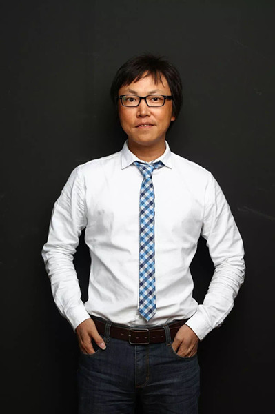
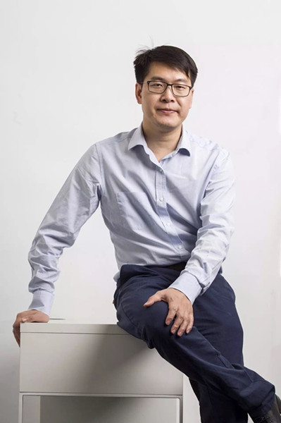
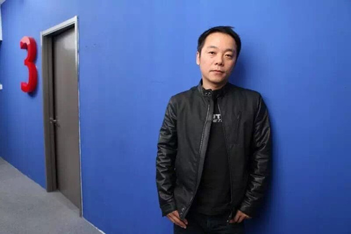

导语：本文作者花了半年时间采访了数位过去十年间成长起来的互联网大佬，终成此文。仔细读来惊心动魄。对于那些没有被写进来的大佬，或许是一种遗憾。

到2017年1月，iPhone问世整好十年。十年之前，乔布斯在旧金山的苹果发布会上，向世界展示了第一台真正的智能手机，第一代iPhone。在此之前，互联网的用户和创业者都只知道PC，之后，移动互联网到来。
流水十年间，改变在时刻发生。
2005年初，苹果宣布研发iPhone的时候，中国的互联网第一代创业者们初步形成“战国七雄”之势（百度、阿里巴巴、腾讯、新浪、搜狐、网易、盛大）。第二次创业潮刚刚显露迹象，人们开始谈论Web2.0。王兴开始人生中的第一次创业，创建了校内网。杨浩涌和姚劲波进军分类信息网站，各自创建了赶集网、58同城。视频网站也在这一阶段崛起，暴风集团CEO冯鑫开始创业，古永锵也开始筹备优酷。
十年过去，“战国七雄”成为BAT三家独大，一些人甚至提出要去掉B，剩下AT“双雄争霸”。与此同时，2005年开始入场的创业精英们开始成长为互联网的中坚力量。
十年间变化太多，无法一一记载。我们不追求刺激和耸人听闻，而是希望记录历史的同时，能发掘创业过程中的普世问题并寻求答案。
时代洪流：如何选择创业方向？
2006年底，还是金山高级副总裁的王峰发现，身边的人几乎快走光了。
“我还没有离开金山的时候，外面就开始有一个说法叫‘旧金山’了。”王峰对财经天下（ID:cjtxzk）说。
从2005年前后，原金山高管纷纷离职创业，被称为“旧金山（人）”。2006年11月，王峰递交了辞职信。YY创始人李学凌曾做过记者，和王峰认识，当得知王峰创业后，说了一句：“你怎么才出来（创业），我都出来两年了。”
▲ 王峰说，创业有时候需要冒险精神，想太多，权衡利弊太多，反而不会去做了。
“跟CC（庄辰超）认识好多年，跟高燃也认识好多年，都是2005年前后创业的。” 赶集网创始人、瓜子二手车CEO杨浩涌对财经天下（ID:cjtxzk）感慨说，创业都是一茬一茬出来的，他还记得当时徐易容在做抓虾网，王兴开始做校内，豆瓣刚刚起步，只有张涛的大众点评，倒是已经做了两年。
“杨浩涌是，姚劲波是，王兴也是，我们那一票人都是2005年出来创业的。”暴风集团CEO冯鑫对财经天下（ID:cjtxzk）说。2005年，人们开始推崇Web 2.0的概念，主张用户既是内容的消费者，也是生产者。除了王兴创办了校内网（后改为人人网）、阿北创建了豆瓣网，还有一个红火一时的网站是猫扑。
“除了BAT，今天中国互联网创业潮最佼佼者的一批人，就是从2005年到2009年之间起步的，基本上占了今天主流互联网公司的90%。”王峰说。
关于创业的方向，王峰隐约感觉有两个：一个是工具软件，一个是游戏。在金山的时候，冯鑫和王峰就是关系很好的朋友，关于创业的想法，两个人也交流了很多。
冯鑫就想做软件。他先找到雷军，让雷军把杀毒软件给他做，做一个软件帝国。雷军回答说，我们要做游戏。冯鑫后来想，自己经常像个二傻子一样办事。
冯鑫又找周鸿祎，说要做软件。周鸿祎说要做动态搜索干百度。2005年，离开3721的周鸿祎创建奇虎360公司，猎豹CEO傅盛也于这一年加入奇虎。9月，奇虎开始商业化运作，推出BBS搜索。周鸿祎和傅盛分别负责搜索和杀毒软件业务。2006年7月，奇虎正式推出了杀毒软件360安全卫士。
冯鑫几乎把当时所有的软件英雄都找了一遍，包括联众世界的创始人简晶、鲍岳桥，华军软件园的老板华军，但都无心恋战。冯鑫自己算了一下，找人投资要200万元才能开始干，自己20万元其实也能开始干。2005年，冯鑫成立了两家公司，一个是做播放器的酷热影音，一个是做插件的公司。
“今天回头看，我觉得无知者无畏。”王峰说，创业有时候需要冒险精神，想太多，权衡利弊太多，反而不会去做了。
直到现在，有时候冯鑫见了王峰，还会笑着说：“你不适合做游戏，你原本应该做工具软件的。” 2005年左右，排名前十的互联网公司里，除了门户网站（新浪、网易、搜狐）其他全是做游戏的，只有腾讯一个是做互联网软件的。“这不符合逻辑，所以当时我非常看好互联网软件。”冯鑫说。
但王峰还是决定做游戏。“其实，你冷静地回想一下，2007年之前，我们看到的商业模式，只有游戏是清晰的。门户网站靠传统的广告收入也只能是艰难地维持。”王峰说。网易率先在游戏上发力，2005年《梦幻西游》上线，随后开始了日进斗金的节奏，游戏成为网易的现金奶牛。
创业者看到了游戏赚钱的能力，而且腾讯也还没有成为巨头。2007年，仅“旧金山”，就有刘阳创建51wan网，张福茂创建游戏谷，王峰也在2007年3月成立蓝港互动。“这个问题也许腾讯感觉会更强烈，如果没有2007年游戏的大爆发，很难想象腾讯今天会长成这个样子。”王峰感慨道。
在创业大潮中，如何选择方向？
冯鑫说，创业时，自己也看到了视频的空间，但选择做下载插件。下载过时太快了，红极一时的快车已经不行了，迅雷如果不离开下载，也一定会被淘汰。插件在2005年是很火爆的，但最后证明选错的原因在于，这件事情只是激发了浏览器的自我完善。
回看2005年，冯鑫认为，当时互联网市场上最大的空白就是两件事儿：一个是互联网软件（应用工具），一个是平台（电商和视频网站）。而真正的踩到点上的，也是选择这些方向的人。
“当时大伙儿都说Web2.0，但实际上Web2.0是假的。博客、猫扑、动态网页搜索，现在看，全是昙花一现。但那拨儿互联网软件大部分都成了，PPS、酷狗、酷我，都选对了方向，你说他们后来再卖掉，那是另外一层了，卖掉也卖了过亿美元，也不能算失败。”
“我们未必朝向最新的潮流方向，但是我们一直还在。”王峰说。2007年，他第一次去参加游戏产业的年度行业展会ChinaJoy，在峰会上发言的是盛大创始人陈天桥、巨人创始人史玉柱。当时，盛大的赚钱能力比腾讯强，陈天桥也一度是中国首富。今天的盛大已经变成了投资集团，而腾讯成了移动互联网时代的巨无霸。
蓝港好像从来没有爆红过，没有在哪一年做过游戏行业的老大哥，但像蓝港这样中型体量的公司，能够在十年里一直活跃在第一线的，已经屈指可数。“我们发现又回到了新的牌局上，上个5年跟我们打牌的是一帮做页游的，再早5年的，又是另一拨人，变化太快了。”王峰庆幸公司一直还活着，“有时候想一想，人未必一定要去追第一、第二，追来追去一个不小心，把自己都搭进去了。”
回看创业的头三年，“这是什么样的路途呢？你奔着那个方向去了，团队OK、你OK，投资人OK，但过程其实很难走得通。”王峰感慨说，创业成功真的是一个极小概率事件，在2005年开始的那一波里，跟蓝港同时拿到融资的公司，今天的市场上几乎已经找不到他们的身影了。
资本和管理：初创者的难题
暴风创业的头两年特别顺利，但回过头来看，冯鑫觉得自己犯了一个错误。“我个人没有意识到钱的作用那么大，我对它的理解没有那么深。”以至于后来，暴风的很多策略因为资金的原因无法立即实施。
58赶集CEO姚劲波有同样的感受，他对财经天下（ID:cjtxzk）说，自己当年创业是单打独斗。如果回到从前，他就会像马云那样，找一个合伙人，找很多钱，十年前就把赶集网PK掉。
王峰觉得比较幸运，在资本寒冬到来前拿到了融资。2008年5月10日，蓝港B轮融资到账，12日汶川地震，接着互联网泡沫就开始破裂了，迎来了将近两年的资本寒冬。“我比较幸运的一点，中间有无数的槛会让你死，但是你都没有死。”
后来，姚劲波见到王峰，谈起2008年，也感慨说，幸亏他在那一年拿了软银1000多万美元。
▲ 姚劲波见到王峰，谈起2008年，也感慨说，幸亏他在那一年拿了软银1000多万美元。
与姚劲波相比，杨浩涌的运气就没有那么好。蓝驰在2008年6月份就给赶集网发了投资意向书，但因为金融危机，谈判拖的时间比较长，第一轮融资2009年5月4日才拿到，整整隔了一年。
“金融危机时还是蛮艰苦的，公司没钱，我们几个人就不拿薪水想办法卖广告。好在公司已经做了4年，有流量。”杨浩涌说，因为有流量，赶集网开始卖广告的时候，发现收入见效很快，一个月能做到70万元的收入，而公司大概只有40多人，一下子赚钱了，大家还挺高兴。当赶集网收入第一次突破100万元的时候，还开了一个庆祝会，杨浩涌开了一瓶香槟，所有人在一起切了一个大蛋糕，蛋糕上面写着“一百万”。
2016年3月，瓜子二手车平台交易量突破了一天一千单，杨浩涌也带着瓜子的同事庆祝了一下。“估计一天一万单的时候也就飘过了，越是早期越有纪念意义。”杨浩涌说，好的团队是通过打拼出来的，越艰苦给他的记忆印象越深刻，反而到后期公司大了也不是那么缺钱了，会相对比较平淡。
回过头来看早期的创业，杨浩涌认为有两点很重要，基本上会决定自己和对手的地位。一是早点拿到融资甩开竞争对手，二是要建设好中层团队。总结起来，就是资本和团队建设。实际上，这几乎是每个初创公司都要趟过的大坑。
2008年，暴风的员工增长到了七八十人，冯鑫开始感觉不那么舒服了。当公司超过一百人的时候，内部的人事问题，让冯鑫不胜其烦，甚至想一走了之。他去道观待了一段时间，发现完全放弃一家公司是很艰难的事，于是又回去，决定自己去做管理、抓业务。2010年以后，冯鑫先后抓过在线视频、销售、无线业务，再后来就开始拓展新领域，想过做投影仪，但最终选了VR。“每年都会抓一两件事情。一个公司无论怎么样，都是一个个体生命，都需要一年做一两件成功的事情。所以每年我就会追求那一两个目标。”冯鑫说。
拉勾网创始人许单单有同样的遭遇。2014年下半年，B轮融资之后，拉勾团队开始快速扩张，从十几个人，一下变成六七十人，管理开始出现各种问题，员工的士气很低落。有的员工认为，都融到B轮了，该涨工资了吧，办公室是不是该装修得更好一点，员工餐是不是该升个级了。而公司的企业文化、管理，包括部门之间边界不清晰的问题特别多。
许单单和拉勾网CEO马德龙以前都没管过人，经常晚上大家下班走了，他们就坐在那里唉声叹气。后来，他对财经天下（ID:cjtxzk）感慨说，在别人看来最风光的时候，往往是创业者最艰难的时候。
许单单就去参加各种培训班，在联想之星的创业营，许单单把公司的问题告诉了君联资本的王建庆。王建庆建议说，公司一年多的时间就走到了B轮，一定有成功的地方，这个时候不要说做企业文化，90后也不喜欢企业文化，就把公司的高管和核心层拉到一起，好好地聊一聊，是什么因素让公司走到今天的，又是哪些因素阻碍了梦想。许单单就按照建议，把公司高管们拉到了一个郊区的农场里面，从早上七八点待到晚上十一二点，一起讨论这两个问题。最终讨论出了几个关键词：野心、快速执行、自我驱动、结果导向。现在，拉勾已经几百人了，晚上10点钟大部分员工都还在公司。
美团点评CEO王兴看来，管理当然是一件不容易做的事情，但管理是可以解决的问题。这位连续创业者喜欢把问题分为两类，一类是已经被解决过的问题，一类是还没有被人解决过的问题。
“我判断一个问题，首先想这是不是一个全新的问题，还是别人已经解决过的问题。管理不是一个全新的问题。放眼世界，最大的私营企业应该是沃尔玛，两百万人，IBM、华为大概二十万人，两三万人或者四万人的企业有很多，BAT、京东已经五六万人，他们显然解决过这个问题。”
王兴坚持尽可能多看书，哪怕一本看起来跟工作没有任何直接关系的书。他同时使用好几个kindle，家里一个，车上一个，办公室也有一个。
他认为，当事情越来越多的时候，CEO只能做一些无法让别人代劳的事情，一个是战略愿景和总体战略，第二个是团队，第三个是确保公司有足够的钱。只有这三件事情是别人无法代劳的。
冒进和收缩：关键是把握节奏
王峰创业初始，目标非常清晰，想三年就上市。但头一年，他就发现这不可能实现。“目标提的过于急切了，会让你自己的团队，甚至外界，给自己加了很多束缚。”
创业第一年，蓝港就拿到了200万美元的A轮融资。到2008年5月10日，B轮2000万美元就到账了。王峰胆子大，拿到了钱就花。
2007年底，蓝港员工达到100多人，到2008年下半年，员工数已经超过了900人。王峰计划在三年之内研发7~8款大型游戏。当时，端游的开发流程十分复杂，一款游戏的预算至少3000万元起。最后，《佣兵天下》干掉了8000万元，《西游记》干掉了3000万元，还有一些项目被中间停掉了。
“（花掉这么多钱）就为了做一款游戏，这恐怕是整个产业历史上都不多见的，而且并不成功，就是赚了一些小钱。”王峰说。
蓝港联合创始人廖明香觉得不太对。蓝港同时在开发四五款端游，每款投入都在几千万元，近百个人做，做了三四年时间，还没有什么苗头。低下的开发效率，冗余的人员在不断吃掉公司的大量现金，而收入只依赖《西游记》和《佣兵天下》，每个月还不到500万元。资金链太脆弱了，一定得裁员。
2011年初，廖明香建议王峰裁员。王峰一开始很犹豫，投入这么久了，要不再等一个月？一个月一个月拖下去，到了2011年第四季度，廖明香告诉王峰，账面上的现金只够撑半年了。王峰这才决定，从900多人裁到300多人。
大胆冒进，是许多创业者在拿到大额融资后，都会尝试的决策。创业的前五六年，赶集网一直是一个不怎么入流的小公司。直到2011年年初，今日资本和红杉资本共同参与了C轮融资7000万美元，赶集网才进入了小独角兽行列。
此前的杨浩涌性格沉闷，不喜欢接受采访，也不太信广告的那一套。在今日资本徐新的帮助下，赶集网终于拍摄了第一条电视广告，姚晨骑着小毛驴喊，“赶集网，啥都有”。随后，58同城跟进，拍摄了杨幂代言的“58同城，一家神奇的网站”。
赶集和58的广告大战，吸引人们开始关注分类信息行业，这个行业也从之前的非主流变成了主流。广告把市场打热了，但团队规模没跟上。2011年赶集网C轮融资完成后，杨浩涌开始大规模扩张招人，不到一年，员工人数从700多涨到了2500，同时还做了很多业务，包括蚂蚁短租和团购。
人员的快速扩张，带来的不是规模效应，而是各种问题。公司的核心管理团队没有一个人带过如此规模的队伍，而本地的广告销售又是亏钱的。一个月广告烧2000万元，员工工资和运营成本是2000万元，市场费2000万元，公司销售额是2000万元。投资人看了数据，很着急，对杨浩涌说，“你这不是空转吗”，照这个速度，一个月亏损4000万元，7000万美元的融资撑不过一年。
投资人们建议杨浩涌收一收。2012年春，赶集网开始收缩，把所有的广告撤了，裁掉了1600人，只剩下900人，广州办事处也撤掉了。那段时间，每隔三两个月就有新闻曝出来，赶集网的某个VP又离职了。“我其实挺自责的，不论什么原因都是创始人的原因，那时候真觉得自己什么都不是。”杨浩涌说。
“（杨）浩涌做对的事情就是，砸了广告销售没跟上之后，他听了我们的话立刻把广告给停了，至少他活下来了。” 蓝驰创投合伙人陈维广说。
陈维广认为，在广告的问题上，创业公司应该砸一点，砸了它，流量就能上来。但流量上来后，应该马上去融资。因为广告一停的话，流量一下，你的融资就会受影响。
“这是一个毒药。”蓝驰创投的另一位连续创业者徐易容在美丽说上的市场推广就做得过于激进，没有被投资人拉回来。最终，美丽说与蘑菇街合并，徐易容也不再参与美丽说的管理。
“你想想你身边的一两千兄弟，因为你不会管理或者激进，或者各种原因，来的时候给他们一个大的梦想，而现实跟梦想是完全背道而驰的。你看着他们很努力，你跟他说对不起我们要把这个项目砍掉了，我们已经不需要你了，这是挺大的煎熬。”杨浩涌说，当时账上已经快没钱了，连续三个月销售额下降。他跑遍全国去融资，没有一家VC愿意投钱，只能不停收缩。
能怎么办呢？既然挣不来钱就控制成本、砍人、砍预算，开会的主要事情就是看看电话费打了多少，快递费打了多少，能不能再便宜一点，复印费能不能再省一点。每个月的人工加运营成本从2000万元降到1500万元，最后到800万元。降到800万元的时候，杨浩涌算了算，只能扛一年。
“钱不是最大的困难，钱总是有办法解决的。该裁员的时候，就要忍痛，下定决心去裁员。裁员并不代表就会失败，只要活下去，就有机会再长起来。”杨浩涌说。最大的困难，是对自己的煎熬，总觉得未来一个月两个月都是完全未知的。公司还要往前去推进，但对你和你的团队的要求，你完全无法应付，相当于一下要把你顶到极限，而且你要长期在这种极限状况下拼命学习，否则你可能就跟不上了。
冯鑫对“煎熬”两个字深有体会。
2012年第一季度，暴风递交了A股上市申请，随之而来的是A股长达两年多的IPO暂停。那是中国证监会有史以来IPO申请暂停最长的一段时间，暴风是从头赶到尾。“整整停了两三年，我们不能做任何资本动作，还要保证财务报表，这使我们的投入各方面都束手束脚的。”冯鑫也想过要不要改VIE或者去香港，但无论调到哪个市场，都需要至少一年时间。
▲ 2015年初，停闸两年多的A股开闸了，3月24日，暴风上市，随后迎来40多个涨停。冯鑫特别兴奋，有钱了。
差不多快等到两年的时候，冯鑫心里就发毛了。有一次冯鑫跟拉卡拉创始人孙陶然聊起来，孙陶然就对他说：“你就一条道跑到黑，你管他呢，别跑来跑去的。”冯鑫想想，觉得孙陶然说得挺好，就坚持了下来。
2015年3月，暴风终于上市，随后股价飙升。“自己感觉就是好日子来了。很多想法没动呢，现在条件具备了，就全部规划了一下。”
有时候，杨浩涌觉得自己的运气也不坏。2012年底，在公司就要撑不下去的时候，通过第三方介绍，他去香港见了OTTP（安大略教师退休金基金）的投资人。
OTTP的投资人听完杨浩涌的创业故事后，对他说，“我们每年12月份全球只投一个高科技公司，不过今年还没有投出去。”杨浩涌一听，觉得有戏。
当时，OTTP正好在看中国的投资机会，并首先向资金短缺的京东伸出援手。2012，京东时常传出资金链断裂的新闻，一些传言甚至称京东就要关门大吉。但11月，OTTP确定向京东商城投资2.5亿美金，老虎基金跟投，最终京东拿到了4亿美元融资，估值72.5亿美元，最终改写了中国电商的格局。
拿到救命钱后，杨浩涌带着团队去长城公社脚下开了一个会。杨浩涌他们就按照从书上看来的swot（竞争优势、竞争劣势、机会和威胁）分析方法，一边是赶集，一边是58，开始打分。分析完了，发现，58全是优点，赶集全是缺点。但赶集有一个机会，“58看不起我们”。当时，58的销售业绩差不多是赶集的3倍。姚晨小毛驴的广告早就撤掉了，而杨幂言的广告一直没有停止过。
“幸亏58选择了上市，选择上市以后（姚劲波）的心思全部在上市上（顾不上赶集）。”杨浩涌说，媒体不能去催问一个公司太早去做IPO，媒体喜欢问创业者什么时候IPO，但没有准备好的化，代价是巨大的。
58选择上市的最终结果是，给了赶集网喘息的机会。而赶集网也抓住了这一机会，并伴随着之后的O2O浪潮快速成长。2014年8月，赶集网又拿到了老虎基金领投的E轮2亿美元融资。而过早上市的58同城被拖入到了新一轮的大战里。最终，这场纠缠十年的战争在2015年4月15日结束，双方宣布合并。
双方各自付出了牺牲了一半的股份。“这是代价，双方都不想合并，都恨不得把对手拍死，但后来看看后面的几家我也就平衡了。”杨浩涌反思说，早拿到钱是甩开竞争对手的重要因素，但在拿到钱的同时创业需要节奏紧凑而有力，把中层团队做好。
机遇与挑战：移动互联网爆发
“蓝港早期走了这么多弯路，为什么还能活跃到今天呢？我们就抓住了页游转型和手游爆发的两年关键时期。”王峰说。蓝港早年在端游上投入那么大也没有赚到钱，但做页游缓过劲来后，立刻抓住了手游的机会。
2009年下半年，王峰感到蓝港早期做的那些产品，已经显得不合时宜了。但他倒并不认为不转到移动端上就一定会死，只是觉得，PC端市场已经饱和，再做端游没那么酷了。
这一年，王峰买了他的第一个iPad，Wi-Fi版的，16G。看着iPad里的一些应用，王峰就想让蓝港去尝试做移动端的游戏。十几个工程师和美术人员在业余时间做了蓝港的第一款移动游戏——砸地鼠，结果在iPad的国内排行上做了一个月的第一名。
虽然还不知道怎么赚钱，但王峰的心就野了，开始尝试把PC端的游戏原型移植到移动端。到了2012年，《王者之剑》《苍穹之剑》《神之刃》三款完全基于移动端的游戏表现很好，每款游戏的月流水都超过了4000万元。而且，经常有渠道分发的人在蓝港公司的楼下等着王峰，希望能把蓝港的游戏接到他们的SDK上。
2012年至2014年，三年里，蓝港尝试并放弃了很多东西。“我们放弃页游的时候同行还不理解，说我们一会儿放弃这个，一会儿放弃那个，永远在放弃。”回想起来，王峰觉得那段时间做得非常辛苦，但也很幸运。“过去没有抓住的机会今天可以重新再来了，而且巨头好像没有我们想象得那么快杀入进去。”
“关键是时间点。”唱吧CEO陈华说。2012年5月31日，唱吧在苹果应用商店上线，5天之后便排在了免费排行榜的首位。
2006年1月，陈华与吴世春曾联合创立酷讯，一开始把酷讯定位于生活搜索，要覆盖生活中的方方面面：招聘、交友、租房、旅游等等，最多的时候业务分为10个方向。经过盲目扩张后，他们考虑收缩战线做旅游搜索，但投资方认为这是大事往小里做，双方发生分歧。因为投资方在董事会上占多数席位，陈华和吴世春出局，公司被卖掉。2015年7月，美团点评向媒体证实，全资收购酷讯，价格为数千万美元。
吴世春后来说：“当时我们还是不成熟，在管理上、创业节奏的把握上都出了一些问题。”
反思酷讯，陈华认为最大的问题就是不专注，不专注而耽误了很多时间、浪费了很多精力。因此做唱吧，陈华决定吸取教训，无论如何都要专注。
唱吧能火起来，陈华认为是很多因素聚集而成的结果，但最重要的是，当时正是中国移动互联网普及的时间点。“大家都在快速换机，从之前的功能机换到智能机。这时，用户对一个新的应用、好玩的应用，需求是极其强烈的。”
中国工信部电信研究院的数据显示，2011年中国智能手机出货量达到1.18亿台，同比增长175%。从2011年11月开始，苹果应用商店 App Store在中国才使用人民币结算，彼时国内的App应用十分稀缺，智能手机用户也在寻求各种有趣的App。更美创始人刘迪在2010年买了一台iPhone，他记得里面没有什么应用，只是可以横过屏来，上新浪微博。
不过，这种移动互联网转型带来的红利转瞬即逝。
过了2013年，单纯的线上软件和应用的空白基本被填满了，创业者只能下沉到线下，在O2O中寻找新的空间。“2013年创业其实很苦的，巨头都在布局，而你打算做的，前面至少有10个小兄弟都在排着，他们比你先拿到钱，又不比你笨，感觉那两年瞬间就过去了。”王峰说。
冯鑫知道，暴风在移动化的道路上，走慢了。但他也清楚，暴风即使移动化做得更早一点儿，一样赢不了。视频战争的结局就是，花钱买版权的人是赢家，但此时的暴风账面上，资金并不充裕，而且因为申请IPO，公司不能再融资。“从PC到手机，视频会有一些变化，但变化不大。在PC上是BAT、是优酷、爱奇艺、腾讯，到手机上还是他们。”
冯鑫认为，在收购暴风影音后，自己犯了两个错误，一个是没有意识到版权的重要性，二是在线视频做晚了。虽然在线视频很烧钱，但也值钱，如果暴风能更早地布局在线视频，今天也许是另一番局面。
反而是乐视抓住了这个机会，趁着版权价格还没有涨起来的时候，收购了大量的版权。乐视也在A股上创造了一个股价的巅峰，从2012年12月3日上市时的14.43元一路飙升至2015年5月12日的170元。
“视频这个战争，简单粗暴，就是买版权，你买大剧和不买大剧天壤之别。我们赢不了，所以我们要离开视频去做娱乐。”冯鑫说。
影响冯鑫的是雷军。2011年底，雷军创建小米，并在2012年推出了小米手机，成为当时网络用户追捧的对象，造成了一码（F码，购买小米手机资格）难求的奇观。
“小米的火爆对我的启示还是很大的。”小米用了3年时间，估值突破了500亿美元。在互联网的历史上，冯鑫都不记得还有谁以这么快的速度成长过，BAT好像都是慢慢成长的。而且，雷军是自己曾经熟悉的一个人，一个熟悉的人突然做了一件前所未有的事，“就引起我非常大的思考，最大的思考就是一定要选对的方向，绝不能选错误的方向”。
冯鑫想做娱乐相关的屏幕，想了两个方向：一个是电视，一个是投影仪。此时的暴风还是没有钱，冯鑫更倾向于做投影仪，因为研发费用低。“我觉得第一想做的是机顶盒和电视机，但是没做。没有钱，有些事儿是你做不了的，你没有条件。”到了2015年初，停闸两年多的A股开闸了，3月24日，暴风上市，随后迎来40多个涨停。冯鑫特别兴奋，有钱了，“而且我们终于找到了VR”。
实际上，2012年后半年冯鑫就开始找方向，他在公司里强调，一定要创新，要找新方向做。他们选了“看电影”，桌面版的，做了半年多停掉了。后来，冯鑫想明白了， 2012年还做PC，方向就不对。冯鑫记得特别清楚，2012年初，PC的表现还很稳健，到了下半年，PC下滑就非常明显。
创业进化：从模仿到创新
“对我冲击最大的事情，就是移动互联网的流量超过PC。基本上这个事情改变了整个行业的格局。”贝贝网CEO张良伦说。
张良伦曾是阿里巴巴旺铺的负责人，2011年辞职创立特卖网站米折网。与美丽联合CEO（原蘑菇街创始人）陈琪、滴滴创始人程维等人在同一时期离开阿里创业。2010年初，陈琪从淘宝辞职，准备创业。陈琪说他潜意识里感觉到，互联网的先行者和巨头们越做越好，留下的空间越来越少，有种“很强烈的被召唤的感觉，再不创业就来不及了”。
2014年4月，在米折网的基础上，张良伦创建母婴电商贝贝网，并且直接放弃了PC，所有精力全部在无线。“做米折的时候，我们还是叫无线研发部，做贝贝时全公司都在做无线，这对我来说是最大的冲击。”张良伦认为，美团真正成为一家巨大的公司，是因为移动互联网，而且，如果没有移动互联网，也就不可能有滴滴。
2012年之后，移动互联网全面爆发，中国的互联网创业呈现出了与此前完全不同的景象。
在这之前，中国的创业者们的创业模式都非常简单，模仿硅谷。阿里、京东、58赶集、微博、美团点评、滴滴……几乎所有的公司都可以在美国找到早期的模型。而大部分创业者也毫不避讳，在融资甚至谋求上市的时候，都会公开宣称，自己是中国的谷歌、中国的亚马逊、中国的eBay、中国的Airbnb。
然而，随着中国市场的发展和特有的国情，在许多方面，中国逐步走在了世界的前头。其中，以O2O和社交最为典型。
▲ 王兴在内部讲话中提到，往后看，“互联网＋”要做的是各个行业从上游到下游的产业互联网化，用互联网、用IT全面提升整个行业的效率。
王兴是最著名的连续创业者，他的校内网模仿了Facebook、饭否模仿了Twitter，早期的美团也是参考了美国最大的团购网站Groupon。但是，进入移动互联网时代，随着O2O概念的普及，今天的美团点评早已经脱离了Groupon模式，从一年多前，美团点评就开始去团购化。
“光做纯线上的事情不行了，就开始往线下走。我们做了O2O，但从开始到现在，也只做了很薄的一层，主要还是线上引流，也就是帮助商户做营销，做整个产业链最后的那一小段。”王兴在内部讲话中提到，往后看，“互联网＋”要做的是各个行业从上游到下游的产业互联网化，用互联网、用IT全面提升整个行业的效率。但如何去操作，仍需要王兴和美团去摸索，因为没有模式可以借鉴了。
在创新的路上，微博算是比较成功的一个。这个创建于2007年、模仿Twitter的产品，成功走过了2013年的低谷期，如今市值已经达到了100亿美元。而反观Twitter，面临着无人问津的尴尬境地。最新的报道称，继谷歌和迪士尼放弃对Twitter的购买意向后，Salesforce也正式宣布放弃竞购Twitter。
王峰认为，严格意义上，新浪微博是移动互联网时代最早的一家标杆公司。从用户的使用习惯上，最早是刷微博，之后变成刷微信，再往后是大众点评、打车软件。
不过，人们普遍认为，移动互联网时代真正的成功者是张一鸣。张一鸣曾参与创建酷讯，2012年创办字节跳动（今日头条）。凭借着30多万个自媒体号，今日头条拥有超过5.5亿装机用户，月活跃用户超过1.3亿。在最新一轮的融资传言中，估值已经高达120亿美元。
“互联网真正成功的逻辑，在这些看似乱七八糟的各种各样的创业领域，其实会有那种特别缩口的地方。比如说早期互联网缩口的地方实际上就是门户，它的信息源头，就是所有信息的源头。后来是搜索，到现在有可能是今日头条。”冯鑫说，只有缩口的地方，才能成就大的事业。
资本兴起：行业自循环形成
上半年，杨浩涌见了一次庄辰超。之前，庄辰超托一个熟悉的记者向杨浩涌打听了一下瓜子二手车融资的事。
2005年5月，庄辰超与戴福瑞等联合创办去哪儿网，随后与携程展开了长达十年的博弈。2015年10月，去哪儿网与携程合并，2个月后庄辰超辞职，随后创办斑马投资。
和庄辰超一样，美团点评合并后，大众点评的一些创始高管也转身进入投资领域。2016年3月，李璟和龙伟创办了点亮资本，并且与美团一起参与投资了美团第十号员工沈鹏的水滴互助。
“过去十年一个有意思的改变是，互联网行业自循环的形成。” 华兴资本董事总经理、顾问业务主管王力行对《财经天下》周刊说。华兴资本成立于2004年，近年来几乎包办了国内互联网行业大大小小的融资、并购案。
2016年正好是王力行在华兴资本工作的第十年。十年前，互联网项目的融资都是来自大型的风投机构，甚至还要远渡重洋，比如去日本软银、美国的麻省理工找钱。以当时互联网创业的集中领域游戏为例，创业者能拿到的融资都来自游戏行业之外。比如，盛大最早的投资来自软银亚洲，2003年拿了软银亚洲4000万美元，蓝港的早期是IDG投的。但现在，游戏行业创业，主要来自已经上市的这些早期游戏公司，盛大、蓝港、昆仑万维都在做投资项目。盛大更是直接转型为一个投资集团。
这种现象遍及互联网的每个行业，并且在创投圈形成了几个著名的派系，比如阿里系的王刚、吴泳铭；百度系的吴世春、王啸、黄明明。在阿里工作过的王刚，如今已经是最著名的天使投资人。2012年，王刚给了同在阿里工作过的程维70万元，帮助后者创建滴滴打车，4年后滴滴与Uber中国合并时，王刚的账面回报高达30亿元。
天使投资人的崛起，主要得益于2013年至2015年间猎豹、聚美、陌陌、阿里、京东等公司集中赴美IPO——这可以说是中国互联网二十年来最风光的阶段。2014年9月20日，阿里在纽交所上市，收盘时市值突破2300亿美元，成为当时仅次于苹果、谷歌和微软的全球第四大高科技公司和全球第二大互联网公司。一大批创始高管因为公司IPO而实现财富自由，他们转身把收益投入到了自己最熟悉的互联网行业，就像当年硅谷里发生的一样。
杨浩涌创业时，自己出了4万美元，三个好朋友各支援了2万美元，按照当时的汇率差不多是80万元。杨浩涌给自己定了一个要求，每个月花5万元，争取在16个月内拿到下一轮融资。他招的都是兼职和学生，代码自己写，营销也自己做，所有的薪水加一起就2万块钱。但融资还是比想象的慢，直到2009年，拿到第一轮才慢慢开始去招人。
当时，赶集网在清华学院大厦的一间办公室里，对面是高燃的办公室，两个人经常串门。2004年，高燃创建了流媒体平台MySee，红得一塌糊涂。2006年初，MySee拿到了1000万美元的融资，但流媒体昙花一现，很快被在线视频网站取代。2006年11月，高燃辞去MySee总裁职位，进入投资基金工作。
2015年底，杨浩涌给自己掏了6000万美元作为瓜子二手车的天使轮融资，他说投别人不如投自己。而高燃也在这一年联合戴科英、侯继勇等建立风云资本，并且参与了瓜子二手车的融资。
与此同时，风险投资机构也越来越活跃。“现在的投资人都很努力，但在两年前，经纬中国的努力是最突出的。”更美CEO刘迪说，当时，在每一个行业会场里都可以看到经纬中国的投资经理。在当时的经纬中国投资经理周密的怂恿下，刘迪也从春雨医生离职，创建了医疗美容平台更美。如今，周密也离开了经纬，创建了自己的投资机构普华资本。
“好的资金也比那个时候多了很多，IDG系出来了一批，红杉系出来一批，徐新的今日资本在2005年还只是一只小基金，都成长起来了。”杨浩涌感慨说。
2005年的时候，德丰杰全球基金原董事张帆和携程网原总裁兼CFO沈南鹏与Sequoia Capital （红杉资本）一起始创了红杉资本中国基金。也是这一年，徐新离开霸菱投资，创办今日资本集团。
 ▲ 2015年底，杨浩涌给自己掏了6000万美元作为瓜子二手车的天使轮融资，他说投别人不如投自己。
▲ 2015年底，杨浩涌给自己掏了6000万美元作为瓜子二手车的天使轮融资，他说投别人不如投自己。
十年过去了，这两家投资机构成为了互联网里的大赢家。在京东IPO时，今日资本的回报超过100倍，前后投入的约3000万美元变成约19.5亿美元。而红杉资本更是被外界戏称为“买下整个赛道”，在滴滴快的（优步）、58赶集、美团点评、蘑菇街美丽说的合并中，都可以看到红杉资本的身影。
58赶集合并后，找杨浩涌的人多了起来。各种各样的需求，有问投资的，有问品牌的，有咨询怎么合并的。一两个月前，奉佑生突然打电话给杨浩涌，问他品牌应该怎么做。杨浩涌才知道，原来奉佑生创业做了映客直播。2009年的时候，奉佑生在高燃的公司负责技术，因为经常走动，杨浩涌和他也很熟悉。后来，奉佑生又先后去折腾了A8音乐和多米音乐。
“他（奉佑生）当时也是做技术很好的一个人，现在赶上这波大潮。我觉得还是时代造就人。”
未来已来：押注新技术爆发
王力行在华兴做的第一个案子是IC集成电路设计的，融资价格是500万美元，在当时，融资金额超过3000万美元，就是一个非常大的案子了。而过去一年，58赶集、美团点评、滴滴优步，每一个估值都超过百亿美元。
2006年，正是集成电路最火热的时候，但现在，已经很少有人在看这个行业了。“那个行业已经成熟了，现在互联网行业也在走向成熟。”王力行说，一个行业成熟之后，新的机会也就越来越少。
新的机会在哪里呢？
“过去十年，互联网行业普遍以模式创新见长。下一个十年，也许是技术创新。”王力行说。更美CEO刘迪也认为，过去五年，移动互联网做的更多的是模式创新，并且已经把容易做的都做掉了。而像医疗、金融等行业则涉及了大量的线下内容，互联网改造仍只是冰山一角。
一些主流观点，包括谷歌、苹果、Facebook在内，巨头们都把目光聚焦在了无人驾驶、AI、AR/VR等领域。冯鑫已经把赌注押在了VR上，目前，暴风魔镜已经出到了第五代。百度李彦宏也不再提O2O，而是把重心放在了无人驾驶上。
“我其实很期待，或者很笃定无人驾驶汽车。”王峰认为，将来最可能出现伟大公司的前三个行业里，一定有无人驾驶汽车。“你说它是制造业吗？它是互联网吗？它是人工智能吗？从工业文明到现在，再往下结合人工智能，可能会诞生我们现在确实无法想象的公司。”
如果站在那个意义上来看，今天的一切公司都显得很老套，今天的互联网公司，顶多只是影响人们对信息的判断，但那是十年以后的那个时代事情。
从一个高兴奋点跌下去，再冲上来，很多时候，互联网就是这样玩的。陈维广说，2001年的美国，大家对互联网都很兴奋，到了2002年至2003年，整个市场都坍下来，亚马逊的股票没人敢买，人们都认为互联网是没有希望的，但到2005年又开始繁荣起来了。
“每个创新都是这样。一个技术创新开始出现的时候，大家都很兴奋。但它的价值真正体现出来，往往是四五年之后。我认为，VR、AR就属于开始兴奋的阶段，价值真正被挖掘出来，可能需要一点时间。”
2005年，蓝驰在国内投了第一个项目——皮卡，主要做无线IM。蓝驰上海的一个同事认为这个项目挺有趣，可能是下一个QQ。但一年后，腾讯开始推手机QQ，皮卡因此失去了继续做大的机会，被出售给了一家香港上市公司——中软。而当时的FA恰好也是华兴。
陈维广说印象特别深刻，当时都觉得无线市场会很大，但无线真正爆发，其实是2011~2012年。因此，按照之前的经验，无人驾驶、AI、AR／VR这些领域的大规模爆发也许还要在四五年之后，那时候，或许将崛起一批新的科技巨头。
2005年，第一波中国视频网站开始发展起来的时候，陈维广投了PPTV。他不是太看好古永锵（优酷）那个模式，因为觉得他的模式会很烧钱。但陈维广没想到，古永锵能融那么多的钱。
就像当年，智能手机刚刚问世，摆在开发者面前有几个选择：诺基亚的塞班、苹果的iOS、谷歌的Android，还有微软的WindowPhone。当时有一大批人激动地跳进了WindowPhone里面，然后就没有下文了。
有时候就是这样，人算不如天算。
后记
在采访蓝驰创投合伙人陈维广时，他曾极力推荐我们去采访春雨医生的创始人张锐。陈维广说，投他的时候，觉得一个做互联网的人（张锐之前是网易微博的副主编）能把线下的这一摊做好已经不错了。可是现在春雨医生已经做出一个生态来，除了线上，还有春雨诊所，又做春雨国际，还做了一个基金投这些边缘的创业公司，所以他把整个春雨生态做了一个形出来，真的是超出当时的判断。
“他真的让我感觉，一个人如果能随着公司成长而成长，做出来的事业和他的社会价值远超出你的预料。”
然而，10月6日，张锐突发心梗去世。
更美CEO刘迪说，2011年第一次见到张锐时，国内还没有移动医疗的概念。那时候，刘迪在做一个关于罕见病的公益项目，张锐通过微博私信联系到刘迪，约他见面。他们当时聊的是国外的mHealth该怎么翻译成中文。
今天春雨已经成为了它的代名词，也让张锐一直站在行业的风口、也是枪口前。“不过这都已经不重要了，一蓑烟雨任平生，中国移动医疗的开创者，当之无愧。”
世事变化，每个人都将成为历史的尘埃。但我们参与过，见证过。
- 推荐图文
- 推荐人物
- 推荐企业